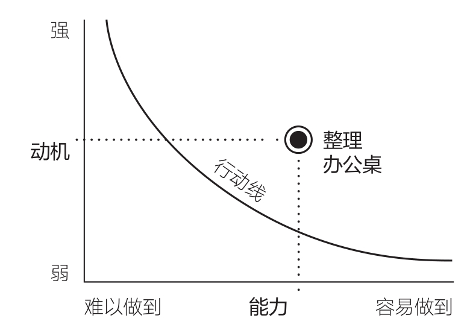
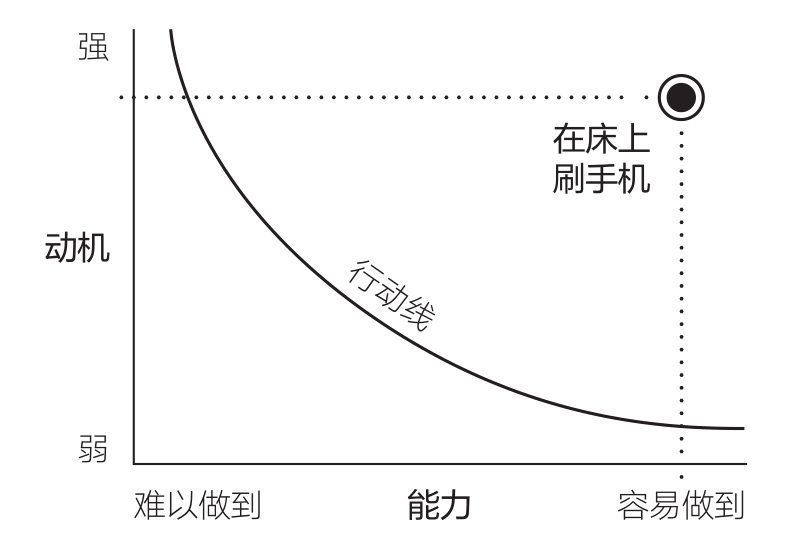
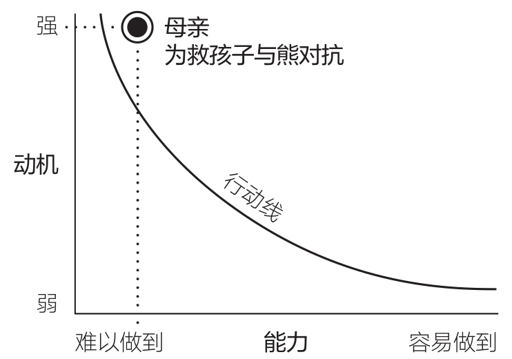

01 · 一个行为到底是怎么发生的
凯蒂是一个管理着几十名员工和上千万美元预算的高管。她每天下班前都有一个固定动作：关闭电脑，把文件摆放整齐，便利贴按"待办""已完成""处理中"分好类，椅子推回去——然后才离开办公室。这个习惯她甚至没意识到自己在做，直到很久以后才发现。
但同一个凯蒂，每天早上四点半还有一个习惯：闹铃一响就拿起手机，开始刷 Facebook。一刷就是一个小时，直到五点半的闹铃响起。原本计划好的晨跑，又一次泡汤。新的一天从自责开始。
两个行为，同一个人。一个让她高效又满足，另一个让她懊恼却停不下来。
B.J. 福格看到这个故事的时候，说了一句话：这不是意志力的问题。这两个行为的底层机制完全一样。
行为就像自行车——外观不同，核心机制一样
福格是斯坦福大学行为设计实验室的创始人。他在这个领域泡了二十多年，提出了一个极简的公式：
B = MAP
拆开就是：行为（Behavior）= 动机（Motivation）× 能力（Ability）× 提示（Prompt）
这不是"这三个事挺重要的"。这是三个必要条件。缺一个，行为就不会发生。
福格自己的说法是："行为就像是不同款式的自行车，虽然外观不同，核心机制却是一样的，都是由车轮、刹车系统和脚踏板构成的。"凯蒂整理办公桌和凯蒂刷手机，表面看一个高尚一个糟糕，但驱动它们的"车轮、刹车、脚踏板"完全一样。
拆开看三个变量
动机——你想不想做
动机是在你做出行为那一刻的欲望强度。
福格对动机有一个冷判断：动机是所有变量里最不可靠的。 它像海浪。看了一个励志视频冲上去，三天后海浪退了躺在沙发上。动机高涨的时候你觉得"这次一定能坚持"，动机消退的时候连鞋带都不想系。
这就是为什么依赖动机驱动习惯的人，几乎都会失败。动机是很好的启动器，但它是很烂的维持器。
福格给动机起了个外号——动机猴子。这只猴子诓骗我们设下不合理的目标，有时候确实帮我们发挥出高水平，但在我们最需要它的时候，它往往不在。
能力——你做不做得到
福格说的"能力"，不是你会不会，而是这件事对你来说有多费劲。包含六个维度：
- 时间： 要花多久？
- 金钱： 要不要花钱？
- 体力： 累不累？
- 脑力： 烧不烧脑？
- 社会偏差： 做这件事会不会让你在别人面前显得很奇怪？
- 惯常程度： 这件事跟你平时做的事接不接得上？
六个维度里，任何一个让你觉得"好麻烦"，能力就往下掉。能力往下掉，行为发生的概率就往下掉。
这就是两分钟法则的原理——把目标拆到两分钟，你操纵的变量不是动机，是能力。你把它降到了几乎不费力。
提示——你记不记得做
提示是行为的火花。没有提示，就没有行为。
不管你动机多高、能力多低门槛，如果压根没想起来这件事，它就是没发生。福格把提示分成三类：
- 外部提示： 闹钟响了、手机弹通知、看见运动鞋放在门边
- 内部提示： 饿了、累了、焦虑了——坏习惯的提示大多是内部的，这也是它们难戒的原因，你没法卸载自己的身体
- 行动提示： 做完一件事之后，它作为一个锚点提醒你做下一件。"在我刷牙之后，用牙线"——刷牙就是牙线的行动提示
环境设计的原理就在这里：把运动鞋放门把手旁边，让提示自己跳到眼睛前面。
一条微笑曲线，说清楚一切
福格画了一张著名的图，叫福格行为模型曲线：

- 纵轴是动机（低到高）
- 横轴是能力（难到易，注意方向——右边是容易）
- 中间那条弧线叫行动线，形状像一个微笑
行为发生在行动线的右上方。意思很简单：
动机高的时候，可以做稍微难一点的事。动机低的时候，只能做极其容易的事。
反过来也一样：如果你把一件事缩到足够小，动机很低也能做。
来看看凯蒂的两个行为在这张图上的位置。
整理办公桌（如图1-3）：动机处于中间，能力偏向"容易"。行为稳稳地落在行动线上方——所以她每天都在做，甚至不觉得自己在"坚持"。
刷手机呢？看另一张图（如图1-4）：动机极强，能力极高——手机就在手上，打开 Facebook 只需要一秒。行为远远高于行动线。而且提示极其可靠——手机闹铃每天凌晨四点半必定响起。

所以凯蒂这样一个成功的、自律的高管，也停不下来。不是她意志力差，是她的刷手机行为在模型里处于"几乎不可能不做"的位置。
四个原则
从这张图出发，福格推出了四条原则：
原则一：动机越强，行为越可能做到。 母亲为救孩子能与熊对抗，普通人为救路人能跳下地铁轨道。当利害攸关时，再难的事也能做到。

原则二：行为越容易，就越有可能成为习惯。 有人让你给他看一下书的封面——你做。有人让你把整本书大声朗读给他听——除非他给你一千美元，否则你拒绝。需要极强动机才能做困难的事。
原则三：动机和能力互为队友。 一方弱，另一方就得强。动机低的时候，只能做极其容易的事。一件事重复做，会越来越容易——所以你可以在动机一般的时候也坚持下去。
原则四：没有提示，就没有行为。 动机和能力是持续存在的变量，提示是一道闪电，稍纵即逝。没听到电话铃声，就不会接电话。
别再怪自己意志力差
珍妮弗曾经是半程马拉松跑者。有了孩子以后，运动停了。身材走样，她告诉自己该重新开始了。
她在书房做15分钟瑜伽，偶尔跑到街尾。但做不到坚持。锻炼日变成了"好"日子，不锻炼的日子变成了"再来一杯酒"的日子。
她自责：以前跑8公里的那个人去哪了？为什么连跑到院门口信箱都做不到？是变老了吗？需要吃抗抑郁药吗？该请私教吗？
上了福格的微习惯网课之后，她用 MAP 分析了自己的情况。答案是：她有独自锻炼的能力，但动机不足。 更重要的是——她缺少一个可靠的提示。
她还发现了一个更深的真相：她喜欢的运动，全是群体性的。一个人单练对她来说太无聊了，像一种义务。最终她加入了每周一次的动感单车课、每周一次的瑜伽课，还有妈妈跑步群。不知不觉间，运动习惯回来了。
福格说了一句很重的话：福格行为模型没有"懒惰"轴，也没有"软弱"轴。它不是对性格好坏的投票。
珍妮弗不等于她的行为。一旦她意识到这一点，一切就变了。她开始把习惯当成食谱——即便结果不如意，也无须自暴自弃，只要改变配比、调整配料再试试就好。
解决问题的顺序，大多数人搞反了
福格给出了一个三步排查法，顺序很重要：
- 先查提示。 有没有提醒？
- 再查能力。 是不是太难？
- 最后查动机。 是不是不想做？
大多数人一上来就怀疑动机——"我是不是不够想？""他是不是不重视？"但福格说，这应该是最后一步。
他举了一个例子：女儿答应放学帮他买海报纸，结果两天都没买。第一反应是生气、讲道理、威胁不再借车——全是动机策略。但真正的问题是：女儿只是忘了。 第二天设一个手机提醒，海报就买回来了。
福格自己在酒店房间里也用过这招。橱柜上摆着一篮子零食——薯片、玉米片、棒棒糖。他知道自己忙完一天回来肯定忍不住。削弱动机？不行，他太爱吃咸味零食。加大难度？小题大做。于是他选了第一步：消除提示。 把篮子放到电视柜最底层，关上柜门。三天没打开过那个柜子。
他甚至用MAP解决过一个飞机上的问题。后面坐了一个小孩，不停踢他的座椅靠背。提示？没法消除，小孩内心在想什么他控制不了。能力？没法让踢腿变难。只剩动机。他从包里掏出一个黄色的笑脸按钮送给小孩："这个送给你，帮你记住在飞行中不要踢我的座椅。"小孩说"好的"，父母报以微笑。飞行很顺利。
这一章的核心，三句话
- 行为 = 动机 × 能力 × 提示。 缺任何一个，行为就不会发生。整理办公桌和刷手机，底层驱动机制完全一样。
- 别先动动机。 动机是那只不可靠的猴子。从提示和能力入手，效果更好、更持久。
- 你不是你的行为。 行为没发生，不是你有问题，是行为设计有问题。像看食谱一样看待习惯——这次不行，调整配比再试。
学习反馈
在飞书中回复本条消息，填写你的答复。